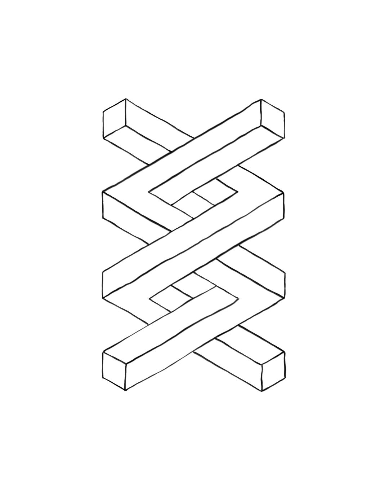

24 de agosto de 2026

Hay una escena que se repite en miles de empresas: alguien, hace una década, evaluó tres o cuatro softwares de nicho, eligió el que mejor cubría el 70% de las necesidades, y desde entonces la empresa entera aprendió a convivir con el 30% que no cubría.
Se armaron planillas paralelas. Se inventaron pasos manuales "para completar lo que el sistema no hace". Nadie lo ve como un costo porque nunca aparece en una factura. Aparece disuelto en horas.
Un software de nicho está optimizado para el promedio de las empresas de esa industria. No para la tuya. Y ahí empieza la inversión silenciosa: la empresa se mueve en función de lo que la herramienta permite, en vez de que la herramienta se mueva en función de cómo trabaja la empresa.
Una vez que un equipo internaliza "así es como se hace esto acá" —con sus rodeos, sus planillas extra— ese proceso deja de sentirse como una limitación y empieza a sentirse como la realidad del trabajo. No lo es.
Tomemos un proceso cualquiera que hoy toma 30 minutos y que, con una herramienta hecha a medida para ese flujo específico, se reduce a 3 minutos. No es un número exagerado — es el tipo de reducción que aparece cuando heurísticas manuales se reemplazan por lógica procesal auditable. La diferencia son 27 minutos por ejecución.
Si ese proceso se repite una vez por día, son 27 minutos diarios. Parece poco.
27 min/día × 5 días = 135 min/semana (2 h 15 min). 135 min/semana × 48 semanas = 6.480 min/año → 108 horas al año.
108 horas son 13,5 jornadas laborales completas de 8 horas. Por una sola persona, un solo proceso, una sola vez al día. Multiplicá eso por cada persona del equipo, o por cada vez que el proceso se repite en el día, y el número deja de ser una curiosidad de planilla.
Yo no llegué a esta idea leyendo sobre productividad. Llegué haciendo mi propio trabajo. Como fotógrafo, tenía sesiones de hasta 400 fotos que necesitaban el mismo tratamiento repetitivo: recorte, selección de fondo, retoque, corrección de color coherente entre todas.
Photoshop —la herramienta de nicho de la industria, extraordinaria para lo que fue diseñada— me obligaba a repetir manualmente, foto por foto, decisiones que ya había tomado antes.
Así que construí una herramienta propia. No para vender, al principio: para no perder mi vida en pasos que ya sabía cómo resolver, solo que la herramienta general no lo sabía.
Hoy ese mismo software tiene aplicación en un nicho mucho más sensible: el retoque de imágenes clínicas para cirujanos plásticos, donde el procesamiento tiene que ser 100% local porque ninguna herramienta de IA en la nube puede tocar ese material por sus propias políticas de contenido.
Ese es el punto exacto: el software a medida no solo es más rápido. Es capaz de resolver problemas que el software genérico ni siquiera puede intentar resolver, porque están fuera de su diseño.
Durante mucho tiempo, "hacete un software a medida" era un consejo económicamente absurdo para una empresa mediana. Un desarrollo custom costaba como diez licencias del software de nicho, tardaba un año, y quedaba obsoleto antes de terminar.
Eso cambió. Hoy es posible construir herramientas específicas, auditables, mantenibles, con equipos chicos —a veces una sola persona— en fracciones del tiempo y el costo que costaba antes.
No es magia ni es una promesa vacía de "IA que lo resuelve todo": es la combinación de mejores lenguajes, mejores frameworks y asistencia de IA en el desarrollo, que bajó drásticamente la barrera de entrada para construir software que antes solo se podían permitir las grandes corporaciones.
La pregunta no es "¿puedo pagar un software a medida?". Es: ¿cuánto me está costando, en horas de vida de mi gente, seguir ajustando mi empresa a una herramienta que fue diseñada para otra?